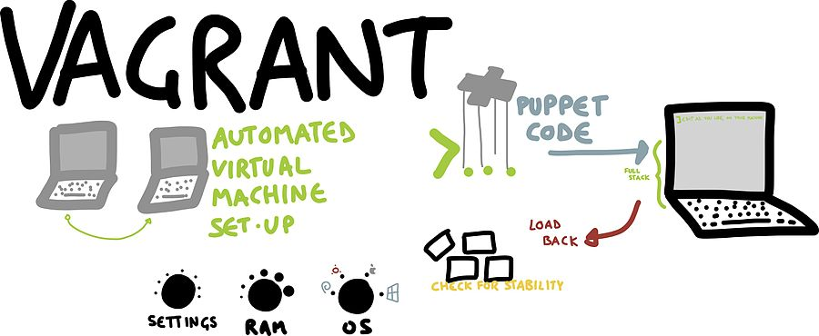
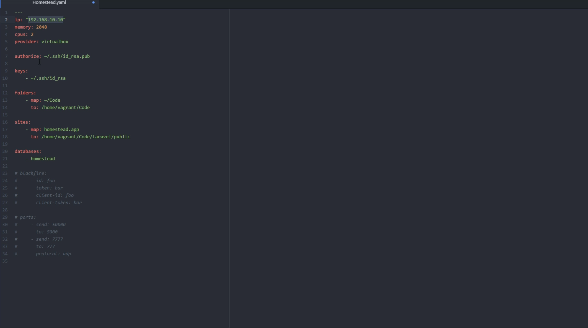
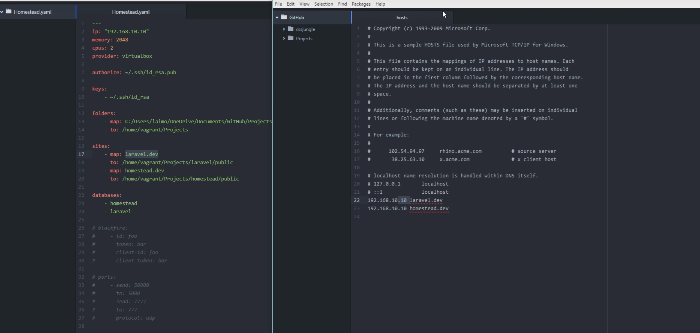

"WHY ITS HAPPENING IN YOUR MACHINE AND NOT MINE " is one of the talked issues in software development. Though the codes tend to be similar, individuals often face this problem of not getting the output desired as of the fellow friend who is working on the same code.Many of us deploy to systems which are completely different from the systems we develop on, and can be difficult to set up particularly if there are a lot of moving pieces in your setup. These could be things like message queuing systems, various databases or specific versions of scripting languages such as ruby. This makes it a very time intensive process to bring new people up to speed on your projects, and to get systems set up right the first time. What if you could have a system that would launch a virtual environment, provision and run all of your systems's various components, be repeatable and fit on a thumb drive? Vagrant allows this by putting a ruby DSL on top of Oracle's VirtualBox API. It allows you to set up and provision your servers using Chef or Puppet, and to reuse those scripts on your real production environment if you want. This makes your server infrastructure version controlled just like your application code. We will go through a setup of a Vagrant instance and show how using shared folders you can develop locally, but be developing on your "local cloud", your running Vagrant instance.
We are going to use then Laravel homestead for vagrant instance. Laravel homestead is a full package virtual box that provides us a good provisioned environment to run our applications upto the development level . We dont need to get confused and be doubful on codes we write. Sometimes there occurs a chaos in two machines for same code we run . Then we waste our time fixing on where should be the problem then we keep on blaming the systems.Instead No more worrying about messing up your operating system! Vagrant boxes are completely disposable. If something goes wrong, you can destroy and re-create the box in minutes! Homestead runs on any Windows, Mac, or Linux system, and includes the Nginx web server, PHP 7.0, MySQL, Postgres, Redis, Memcached, Node, and all of the other goodies you need to develop amazing Laravel applications.

Vagrant boxes are completely disposable. If something goes wrong, you can destroy and re-create the box in minutes! Homestead runs on any Windows, Mac, or Linux system, and includes the Nginx web server, PHP 7.0, MySQL, Postgres, Redis, Memcached, Node, and all of the other goodies you need to develop amazing Laravel applications.
Lets add a laravel homestead which has the softwares installed like COMPOSER, PHP , MYSQL, NGINX ETC. These are the minimum packages required to run a php application . Laravel Homestead comes with numerous other packages which we shall install later thoroughly.
Before launching our homestead environment, we must have two pre installed softwares Virtual box Vagrant Once VirtualBox / VMware and Vagrant have been installed, you should add the laravel/homesteadbox to your Vagrant installation using the following command in your terminal. It will take a few minutes to download the box, depending on your Internet connection speed:1) Vagrant box add laravel/homestead
This command will build us a box named laravel/homestead where we will run our environment. For this, virtual box must be pre installed. Then this wil ask which kind of box we want to install either Virtual box or VMWare .
2) git clone https://github.com/laravel/homestead.git Homestead
This will populate/clone all the homestead requirements inside a folder named Homestead as declared in above command. Then , change your directory to homestead (cd Homestead/) . Inside Homestead , we have a vagrant configuration file called vagrantfile
In order to initialise this vagrantfile ,
3) bash init.sh
This will initialise the homestead . Initialising vagrant file is synonimous to initialising above vagrantfile.
4) Open the Homestead.yaml file inside the homestead folder which was initialised just before.
homestead.yaml file looks like this Generate your ssh key for machine from terminal with
In above file , we have ip as 192.168.10.10 which is our localhost address for our machine.We can also define the sites.Inside sites, there is a map, homestead.app which means it is a domain where our application runs, we can change it per our wish.Inside , we place the path to the project
we are mapping .We can map various domains at once using multiple maps and multiple sites .
folder section in ablove file is synchronisation between development environment and actual machine.
Copy this IP address and open the hosts file located inside drivers of system32 .Then copy above IP address at the bottom of the hosts file then mention the site .

We can mention same IP for two different projects , above we have laravel.dev and homestead.dev .
192.168.10.10 laravel.dev
192.168.10.10 homestead.dev
Inside homestead folder, run
This will start our virtual box at the background.Each time, you start programming , you will have to run vagrant up inside the homestead environemnt.
Then,
Connect to development environment by
We can now run your laravel project !!! Yeaaahh!!!!
References: https://www.mediawiki.org/wiki/MediaWiki-Vagrant